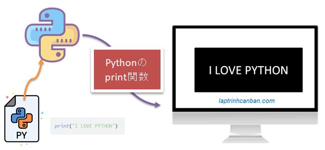
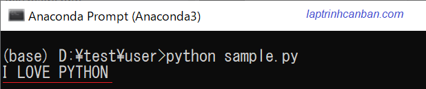
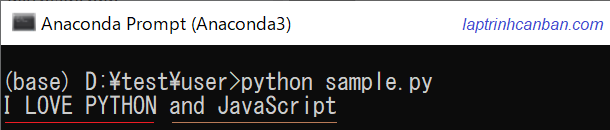

Pythonの標準入出力のトピックの次のの記事では、標準出力のprint関数によるデータ出力方法について説明します。記事を通じて、Pythonの各バージョンにおける出力関数の使い方やprint関数による画面にデータを出力する方法などを学びましょう。
Python2およびPython3バージョンのPythonには、次のタイプの出力関数があります。
- Python2のprintコマンド
- Python3のprint関数
その中、Python3のprint関数には特に注意を払う必要があります。
次の基本的な方法で、Pythonでprint関数を使用できます。
Chúng ta có thể sử dụng hàm print() trong python với các cách cơ bản sau:
- 関数の引数を省略し、Pythonで改行ありの出力
endの引数を指定し、Pythonで改行なしの出力sep引数を指定し、同じ行に複数データを出力
尚、出力したいデータ型により出力方法が異なります。それぞれのデータ型の出力方法は以下の記事で参照ください。
Python2とPython3の出力関数の違い
Python3では、print関数を使用してデータを画面に出力します。Python2では、printコマンドを使用してデータを画面に出力します。
これらの2つのデータ出力関数は機能が似ており、どちらもプログラムの処理結果を画面に出力するために使用されます。
ただし、それらを使用するための構文が異なることに注意する必要があります。Python3のprint関数では()を使用しますが、Python2のprintコマンドではこのペアの記号を使用しません。
たとえば、Python2のprintコマンドを使用して、次のようにデータを画面に出力します。
print 'my love' |
その反面、Python3のprint関数を使用して画面に出力する場合は、追加で()の記号を使用します。
print ('my love') |
尚、Python3にはprintコマンドがなくて、Python3の人気によりprintコマンドの使用方法を気にする必要はほとんどありません。古いプログラムでもしprintコマンドを見当たった場合、これはPython2で書かれたことを理解してください。
Pythonのprint関数
Python3の人気により、この記事を含めてトピック「初心者向けPythonの自習」の知識共有記事では、Python3のprint関数をprint関数として呼び出し、Pythonでのデフォルトの出力関数として扱います。この関数については、以下で詳しく説明します。
Pythonのprint関数とは
Pythonのprint関数とは、Pythonの標準出力の組み込み関数であり、プログラムの処理結果を画面に出力するための関数です。

Pythonでのprint関数の構文と使用法
Pythonのprint関数の一般的な構文には、次のように数のある引数を持っています。
print ( *objects , sep=' ', end='\n', file=sys.stdout, flush=False )
ここで:
*objects: 画面に出力するオブジェクト（データ）。記号*とは複数形を意味し、さまざまなオブジェクトを指定して同時に画面に出力することもできます。sep: 区切り文字列。出力する前に指定されたオブジェクトはsepにより区切られます。デフォルトではスペースになります。end: 画面に出力される最後の値。デフォルトの値は改行文字\nです。この引数は、Pythonで改行かどうかを出力方法を決定します。file=sys.stdout: 出力結果をキャッシュメモリのsys.stdoutに記録するかを指定します。flush=False: 結果を強制的にキャッシュすることを指定します。デフォルト値はfalseです。これは、結果をキャッシュしないことを意味します。
ただし、実際には、Pythonでprint（）関数を使用する場合は、ほとんどの引数を省略し、次の最も単純な構文を使用します。
print ( *objects )
たとえばobjectsを文字列で指定して、I LOVE PYTHONの文字列を画面に出力します。
print('I LOVE PYTHON') |
データ出力画面：

尚、次のように複数の文字列をカンマで区切って*objectsとして指定すると、それらを同時に画面に出力することもできます。
print('I LOVE PYTHON', 'and JavaScript') |
データ出力画面：

注意点として、sep、end、fileおよびflushのすべての引数はキーワード引数です。これらを使う時には必ずキーワードと値をペアで指定しないといけないです。
たとえば、次のようにend引数を使用して、改行なしで出力します。
print("Japan ", end='') |
キーワードを省略した場合、エラーは発生しませんが、引数はPythonによって画面に出力されるオブジェクトとして扱われ、次のようにその関数を無視します。
print("Japan ", '') |
Pythonで改行あり・なしの出力方法
デフォルトでは、print関数は最後の位置で自動的に改行して出力します。例えば：
print("5人の兄弟") |
ただし、引数endを文字で指定すると、各文字列が改行さずに、指定したsepの値で連結して画面に表示されます。これはPythonで改行なしの出力方法です。
たとえば、引数endを空白文字''として指定すると、オブジェクトは次のように連結されて出力されます。
print("5人の兄弟", end='') |
同様に、次のように、画面に出力するときにオブジェクトを連結するために他の文字を指定することもできます。
print("5人の兄弟", end='_') |
複数オブジェクトを１行で出力方法
オブジェクトをコンマで区切って指定することで、Pythonの画面に複数のオブジェクトを同時に出力できます。また、デフォルトでは、これらのオブジェクトはスペースで接続され、次のように同じ行に出力されます。
a = 100 |
ただし、sep引数を使うことで、連結用の文字を次のように変更することもできます。
a = 100 |
最後に、Pythonのデータ型ごとに、データを出力する方法が異なります。これらについて詳しくは、Pythonで文字列や数値、リスト、タプル、辞書などを出力する方法の記事をご覧ください。
まとめ
上記では、KiyoshiはPythonのprint関数によるデータ出力方法について説明しました。レッスンの内容をよりよく理解するために、各例文を練習をしてください。
そして、次のレッスンでPythonの知識についてもっと学びましょう。
HOME>> python基礎 初心者向けのpython学習>>04. pythonの標準入出力